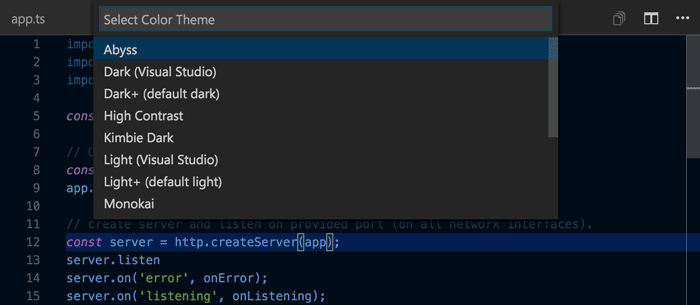
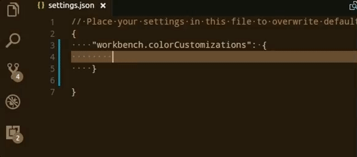
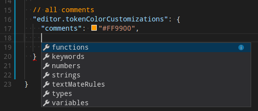
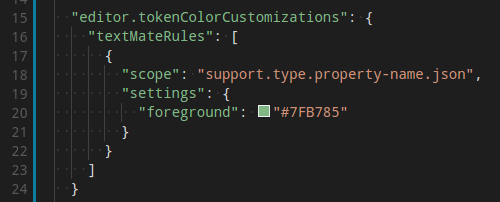

Color Themes
Color themes let you modify VS Code's background, text, and language syntax colorization to suit your preferences and work environment. VS Code supports light, dark and high contrast themes.

Selecting the Color Theme
The current color theme is configured in the settings.
// Specifies the color theme used in the workbench.
"workbench.colorTheme": "Default Dark+"
}
However, there is no need to edit the settings directly. It's easier to use the Color Theme Picker to preview and select a theme.
- Open the Color Theme picker with File > Preferences > Color Theme. (Code > Preferences > Color Theme on Mac)
- Use the cursor keys to preview the colors of the theme.
-
Select the theme you want and hit
kbstyle(Enter).

Tip: By default, the theme is configured in the user settings and applies to all workspaces. But you can also configure a workspace specific theme. To do so, set a theme in the workspace settings.
Color Themes from the Marketplace
There are several out-of-the-box color themes in VS Code for you to try.
Many more themes have been uploaded to the VS Code Extension Marketplace by the community. If you find one you want to use, install it and restart VS Code and the new theme will be available.
Tip: To search for themes, type 'theme' in the Extensions view (
kb(workbench.view.extensions)) search box.
You can also browse the VS Code Marketplace site directly to find available themes.
Customize a Color Theme
Note: Supported on VS Code version 1.12 or higher.
You can also customize your active color theme with the
workbench.colorCustomizations user
setting. You can set the colors of VS Code UI elements such as list
& trees (File Explorer, suggestions widget), diff editor,
Activity Bar, notifications, scroll bar, split view, buttons
and more.

You can use IntelliSense while setting
workbench.colorCustomizations values or, for a
list of all customizable colors, see the
Theme Color Reference.
In VS Code version 1.15 or higher, you can also tune the
syntax highlighting colors using the
editor.tokenColorCustomizations setting:

A pre-configured set of syntax tokens ('comments', 'strings', ...) is available for the most common constructs. If you want more, you can do so by directly specifying TextMate theme color rules:

Note: Directly configuring TextMate rules is an advanced skill as you need to understand on how TextMate grammars work. Go here for more information
Using existing TextMate Themes
You can add existing TextMate color themes (.tmTheme) to VS Code. For example, the Color Sublime site has hundreds of TextMate themes available. See the Adding a new Theme topic in our Extension Authoring section to learn more.
Icon Themes
File icon themes can be contributed by extensions and selected by users as their favorite set of file icons. File icons are shown in the File Explorer and tabbed headings.
Selecting the File Icon Theme
The current File Icon theme is persisted in your user settings.
// Specifies the icon theme used in the workbench.
"workbench.iconTheme": null
}
There is no need to edit the settings.json file
directly. It is better to use the File Icon Theme picker to
preview and select a theme.
- Open the Icon Theme picker with File > Preferences > File Icon Theme. (Code > Preferences > File Icon Theme on Mac)
- Use the cursor keys to preview the icons of the theme.
-
Select the theme you want and hit
kbstyle(Enter).
By default, no file icon set is configured, therefore the File Explorer shows no icons. Once an icon theme is selected, the selected theme will be remembered and set again when VS Code is started the next time .
VS code ships with two icon themes; Minimal and Seti. To install more icon themes, select the Find more in the Marketplace... item in the icon theme picker.
You can also browse the VS Code Marketplace site directly to find available themes.
Creating your own File Icon Theme
You can create your own File Icon Theme from icons (preferably SVG), see the Adding a new Icon Theme topic in our Extension Authoring section for details.
Next Steps
Themes are just one way to customize VS Code. If you'd like to learn more about VS Code customization and extensibility, try these topics:
- Settings - Learn how to configure VS Code to your preferences through user and workspace settings.
- Snippets - Add additional snippets to your favorite language.
- Extending Visual Studio Code - Learn about other ways to extend VS Code.
- Themes, Snippets, and Colorizers - You can package themes, snippets and language colorizers for use in VS Code.